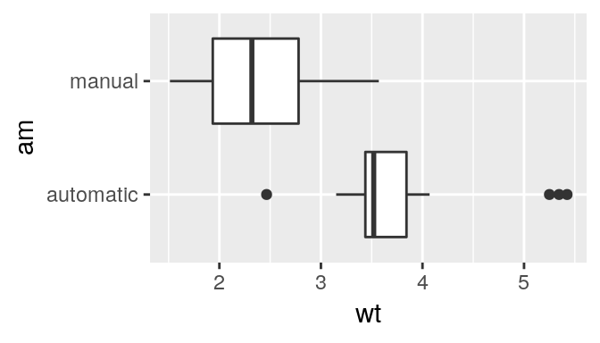
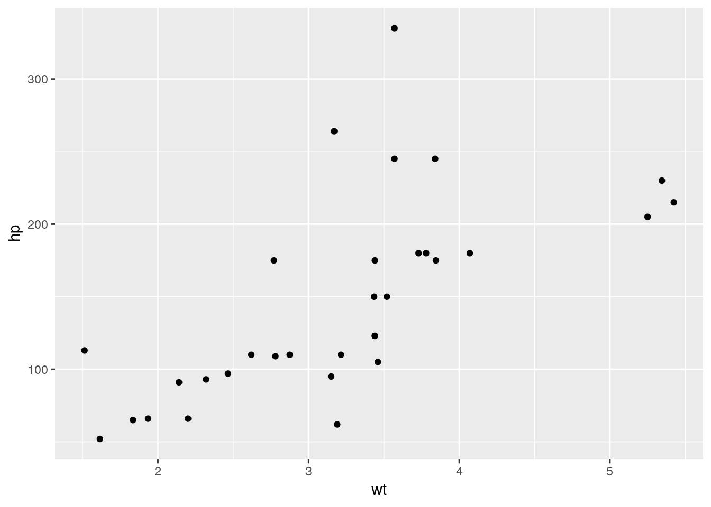
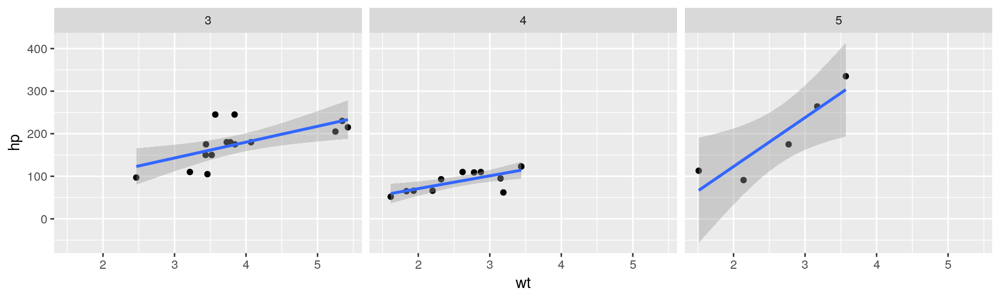

17 More Examples
The rest of this document consists of a few test cases to make sure everything still works well in slightly more complicated scenarios. First we generate two plots in one figure environment with the chunk option fig.show = 'hold':
p <- ggplot(mtcars2, aes(hp, mpg, color = am)) +
geom_point()
p
p + geom_smooth()## `geom_smooth()` using method = 'loess' and formula 'y ~ x'
Figure 17.1: Two plots in one figure environment.
Then two plots in separate figure environments (the code is identical to the previous code chunk, but the chunk option is the default fig.show = 'asis' now):
p <- ggplot(mtcars2, aes(hp, mpg, color = am)) +
geom_point()
p
Figure 17.2: Two plots in separate figure environments (the first plot).
p + geom_smooth()## `geom_smooth()` using method = 'loess' and formula 'y ~ x'Figure 17.2: Two plots in separate figure environments (the second plot).
You may have noticed that the two figures have different captions, and that is because we used a character vector of length 2 for the chunk option fig.cap (something like fig.cap = c('first plot', 'second plot')).
Next we show multiple plots in margin figures. Similarly, two plots in the same figure environment in the margin:
p
p + geom_smooth(method = 'lm')
Figure 17.3: Two plots in one figure environment in the margin.
Then two plots from the same code chunk placed in different figure environments:
knitr::kable(head(iris, 15))| Sepal.Length | Sepal.Width | Petal.Length | Petal.Width | Species |
|---|---|---|---|---|
| 5.1 | 3.5 | 1.4 | 0.2 | setosa |
| 4.9 | 3.0 | 1.4 | 0.2 | setosa |
| 4.7 | 3.2 | 1.3 | 0.2 | setosa |
| 4.6 | 3.1 | 1.5 | 0.2 | setosa |
| 5.0 | 3.6 | 1.4 | 0.2 | setosa |
| 5.4 | 3.9 | 1.7 | 0.4 | setosa |
| 4.6 | 3.4 | 1.4 | 0.3 | setosa |
| 5.0 | 3.4 | 1.5 | 0.2 | setosa |
| 4.4 | 2.9 | 1.4 | 0.2 | setosa |
| 4.9 | 3.1 | 1.5 | 0.1 | setosa |
| 5.4 | 3.7 | 1.5 | 0.2 | setosa |
| 4.8 | 3.4 | 1.6 | 0.2 | setosa |
| 4.8 | 3.0 | 1.4 | 0.1 | setosa |
| 4.3 | 3.0 | 1.1 | 0.1 | setosa |
| 5.8 | 4.0 | 1.2 | 0.2 | setosa |
p
Figure 17.4: Two plots in separate figure environments in the margin (the first plot).
knitr::kable(head(iris, 12))| Sepal.Length | Sepal.Width | Petal.Length | Petal.Width | Species |
|---|---|---|---|---|
| 5.1 | 3.5 | 1.4 | 0.2 | setosa |
| 4.9 | 3.0 | 1.4 | 0.2 | setosa |
| 4.7 | 3.2 | 1.3 | 0.2 | setosa |
| 4.6 | 3.1 | 1.5 | 0.2 | setosa |
| 5.0 | 3.6 | 1.4 | 0.2 | setosa |
| 5.4 | 3.9 | 1.7 | 0.4 | setosa |
| 4.6 | 3.4 | 1.4 | 0.3 | setosa |
| 5.0 | 3.4 | 1.5 | 0.2 | setosa |
| 4.4 | 2.9 | 1.4 | 0.2 | setosa |
| 4.9 | 3.1 | 1.5 | 0.1 | setosa |
| 5.4 | 3.7 | 1.5 | 0.2 | setosa |
| 4.8 | 3.4 | 1.6 | 0.2 | setosa |
p + geom_smooth(method = 'lm')Figure 17.4: Two plots in separate figure environments in the margin (the second plot).
knitr::kable(head(iris, 5))| Sepal.Length | Sepal.Width | Petal.Length | Petal.Width | Species |
|---|---|---|---|---|
| 5.1 | 3.5 | 1.4 | 0.2 | setosa |
| 4.9 | 3.0 | 1.4 | 0.2 | setosa |
| 4.7 | 3.2 | 1.3 | 0.2 | setosa |
| 4.6 | 3.1 | 1.5 | 0.2 | setosa |
| 5.0 | 3.6 | 1.4 | 0.2 | setosa |
We blended some tables in the above code chunk only as placeholders to make sure there is enough vertical space among the margin figures, otherwise they will be stacked tightly together. For a practical document, you should not insert too many margin figures consecutively and make the margin crowded.
You do not have to assign captions to figures. We show three figures with no captions below in the margin, in the main column, and in full width, respectively.
# a boxplot of weight vs transmission; this figure
# will be placed in the margin
ggplot(mtcars2, aes(am, wt)) + geom_boxplot() +
coord_flip()
# a figure in the main column
p <- ggplot(mtcars, aes(wt, hp)) + geom_point()
p
# a fullwidth figure
p + geom_smooth(method = 'lm') + facet_grid(~ gear)